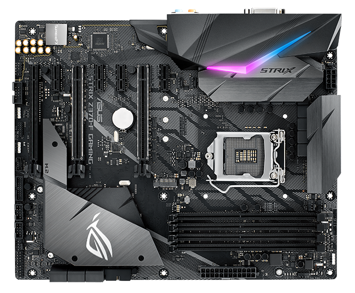

Placa-mãe gaming Intel Z370 ATX com iluminação LED RGB Aura Sync, suporte DDR4 4000MHz, conectores duplos M.2, SATA 6Gbps e USB 3.1 Gen 2 Socket LGA 1151 para 8ª -geração de processadores para desktop Intel® Core™ Sincronize a iluminação RGB com um vasto portfólio de acessórios de PC Aura Sync – agora com suporte para iluminação endereçável de fitas RGB Dissipador Integrado para SSD: Refrigere seu drive M.2, e tenha armazenamento consistente, melhor performance e confiabilidade. 5-Way Optimization: Sistema de tuning automático do sistema, proporciona overclocking e perfis de refrigeração sob medida para a sua máquina. Áudio Gaming: SupremeFX S1220A e Sonic Studio III Alta fidelidade sonora que o deixa dentro das cenas de ação. Conectividade Gaming: Dual M.2 e conectores USB 3.1 Gen 2 Tipo-A e Tipo-C. Rede Gaming: Intel Gigabit Ethernet, LANGuard e GameFirst Gamer’s Guardian: ASUS SafeSlot e componentes premium para máxima durabilidade.
